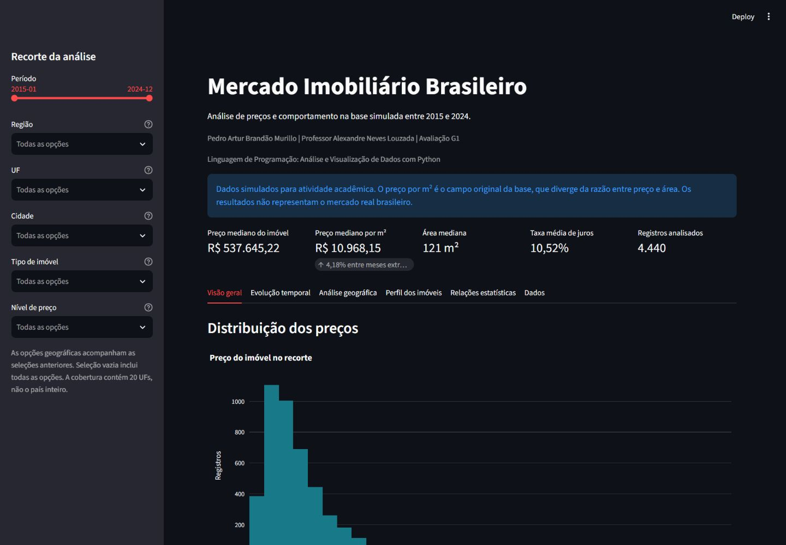

Problema analisado
Como os preços dos imóveis se comportam na base simulada do mercado imobiliário brasileiro entre 2015 e 2024, considerando localização, características dos imóveis e indicadores econômicos?
A análise combina distribuição de preços, comparação geográfica, evolução mensal, perfil dos imóveis e correlação estatística.
A base em números
São 16 colunas originais e 120 meses, de janeiro de 2015 a dezembro de 2024. Cada mês possui um registro por cidade.
37 cidades, 20 UFs e cinco regiões. A cobertura não inclui todas as UFs brasileiras. Não foram encontrados valores ausentes ou linhas duplicadas.
Consultar a fonte do professorO que a análise encontrou
- A mediana mensal por m² passou de R$ 11.564,40 para R$ 12.048,09 entre os meses extremos, variação de 4,18%. A série oscila e não demonstra alta contínua.
- Centro-Oeste apresenta a maior mediana regional por m². Petrópolis tem a maior mediana entre as cidades da base.
- O IQR identificou 248 preços extremos (5,59%). Eles foram mantidos por não haver evidência suficiente de erro.
- As correlações lineares são fracas: a maior magnitude foi aproximadamente 0,034. Não há conclusão causal.
Exploração no dashboard
Filtros de período, região, UF, cidade, tipo e nível de preço atualizam indicadores, gráficos e interpretações. A série temporal inclui média móvel de 12 meses; as análises de perfil e correlação utilizam Matplotlib e Seaborn.

Tecnologias
O notebook executado registra os cálculos e uma consulta SQL. O dashboard lê o SQLite versionado e pode reconstruí-lo a partir do CSV preservado.
Limites da interpretação
Os registros são simulados. As conclusões se limitam à base analisada, sem representar o mercado real brasileiro. Não há ajuste de inflação ou acompanhamento de imóveis individuais.
O preço por m² fornecido diverge da razão entre preço e área. O campo original foi preservado; níveis de preço são categorias exploratórias, sem uma escala quantitativa presumida.